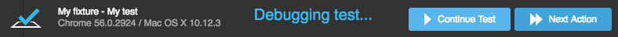

Command Line Interface
testcafe [options] <browser-list-comma-separated> <file-or-glob ...>
- Browser List
- File Path/Glob Pattern
- Options
- -h, --help
- -v, --version
- -b, --list-browsers
- -r <name[:output],[...]>, --reporter <name[:output],[...]>
- -s, --screenshots <option=value[,option2=value2,...]>
- path
- takeOnFails
- pathPattern
- fullPage
- --disable-screenshots
- -s <path>, --screenshots <path> (obsolete)
- -S, --screenshots-on-fails (obsolete)
- -p <pattern>, --screenshot-path-pattern <pattern> (obsolete)
- --video <basePath>
- --video-options <option=value[,option2=value2,...]>
- --video-encoding-options <option=value[,option2=value2,...]>
- -q, --quarantine-mode
- -d, --debug-mode
- --debug-on-fail
- -e, --skip-js-errors
- -u, --skip-uncaught-errors
- -t <name>, --test <name>
- -T <pattern>, --test-grep <pattern>
- -f <name>, --fixture <name>
- -F <pattern>, --fixture-grep <pattern>
- --test-meta <key=value[,key2=value2,...]>
- --fixture-meta <key=value[,key2=value2,...]>
- -a <command>, --app <command>
- --app-init-delay <ms>
- -c <n>, --concurrency <n>
- --selector-timeout <ms>
- --assertion-timeout <ms>
- --page-load-timeout <ms>
- --ajax-request-timeout <ms>
- --page-request-timeout <ms>
- --browser-init-timeout <ms>
- --speed <factor>
- --cs <path[,path2,...]>, --client-scripts <path[,path2,...]>
- --ports <port1,port2>
- --hostname <name>
- --proxy <host>
- --proxy-bypass <rules>
- --ssl <options>
- -L, --live
- --dev
- --qr-code
- --sf, --stop-on-first-fail
- --config-file <path>
- --ts-config-path <path>
- --compiler-options <options>
- --cache
- --disable-page-caching
- --disable-multiple-windows
- --retry-test-pages
- --color
- --no-color
When you execute the testcafe command, TestCafe first reads settings from a configuration file if this file exists, and then applies the settings from the command line. If there are conflicting values, command-line settings override these values in the configuration file. TestCafe prints information about every overridden property in the console.
If you specify the browsers and src properties in the configuration file, you can omit them in the command line.
The browser tab that is running tests should remain active. Do not minimize the browser window. Inactive tabs and minimized browser windows switch to a lower resource consumption mode where tests do not always execute correctly.
Do not zoom pages while testing. Tests may be unstable if the page is zoomed.
TestCafe suppresses native dialogs during a test to prevent them from blocking the page. For more information on how to handle native dialogs, refer to Handle Native Dialogs.
If a browser stops responding during test execution, TestCafe restarts the browser and reruns the current test in a new browser instance. If the same problem occurs with this test two more times, the test run finishes and an error is thrown.
Browser List #
The browser-list-comma-separated argument specifies the list of browsers (separated by commas) where tests are run.
Related configuration file property: browsers.
Local Browsers #
You can use browser aliases or paths to executable files to specify locally installed browsers. The --list-browsers command prints aliases for all automatically detected browsers.
The following example demonstrates how to run a test in two browsers: one browser is specified with an alias, the other browser is identified with a path.
testcafe chrome,path:/applications/safari.app tests/sample-fixture.js
Use the all alias to run tests in all the installed browsers.
testcafe all tests/sample-fixture.js
Portable Browsers #
You can use a path to the browser's executable file (with the path: prefix) to specify portable browsers, for example:
testcafe path:d:\firefoxportable\firefoxportable.exe tests/sample-fixture.js
If the path has spaces, enclose it in backticks. Surround the whole parameter string including the keyword in quotation marks.
In Windows cmd.exe (default command prompt), use double quotation marks:
testcafe "path:`C:\Program Files (x86)\Firefox Portable\firefox.exe`" tests/sample-fixture.js
In Unix shells like bash, zsh, csh (macOS, Linux, Windows Subsystem for Linux) and Windows PowerShell, use single quotation marks:
testcafe 'path:`C:\Program Files (x86)\Firefox Portable\firefox.exe`' tests/sample-fixture.js
Do not use the
path:prefix to run a browser in headless mode - use device emulation or user profiles instead. Specify the browser alias in these cases.
Test in Headless Mode #
To run tests in the headless mode in Google Chrome or Firefox, use the :headless postfix:
testcafe "firefox:headless" tests/sample-fixture.js
See Test in Headless Mode for more information.
Use Chrome Device Emulation #
To run tests in Chrome's device emulation mode, specify :emulation and device parameters.
testcafe "chrome:emulation:device=iphone X" tests/sample-fixture.js
See Use Chrome Device Emulation for more details.
Remote Browsers #
To run tests in a browser on a remote device, specify remote as a browser alias.
testcafe remote tests/sample-fixture.js
If you want to connect multiple browsers, specify remote: and the number of browsers. For example, to use three remote browsers, specify remote:3.
testcafe remote:3 tests/sample-fixture.js
TestCafe provides URLs you should open in your remote device's browsers.
If you run tests concurrently, specify the total number of all browsers' instances after the
remote:keyword.
You can use the --qr-code option to display QR-codes that contain the URLs. Scan the QR-codes with the device you want to use to test your application. This connects the browsers to TestCafe and starts the tests.
Browsers Accessed Through Browser Provider Plugins #
To run tests in cloud browsers or other browsers accessed through a browser provider plugin,
specify the browser's alias that consists of the {browser-provider-name} prefix and the name of a browser (the latter can be omitted); for example, saucelabs:Chrome@52.0:Windows 8.1.
testcafe "saucelabs:Chrome@52.0:Windows 8.1" tests/sample-fixture.js
Start a Browser With Arguments #
To pass arguments for the specified browser, write them after the browser's alias. Enclose the browser call and its arguments in quotation marks.
In Windows cmd.exe (default command prompt), use double quotation marks:
testcafe "chrome --start-fullscreen" tests/sample-fixture.js
In Unix shells like bash, zsh, csh (macOS, Linux, Windows Subsystem for Linux) and Windows PowerShell, use single quotation marks:
testcafe 'chrome --start-fullscreen' tests/sample-fixture.js
You can specify arguments for portable browsers. If a path to a browser has spaces, enclose it in backticks.
For Unix shells and Windows PowerShell:
testcafe 'path:`/Users/TestCafe/Apps/Google Chrome.app` --start-fullscreen' tests/sample-fixture.js
For cmd.exe:
testcafe "path:`C:\Program Files (x86)\Google\Chrome\Application\chrome.exe` --start-fullscreen" tests/sample-fixture.js
Only installed and portable browsers located on the current machine can be launched with arguments.
File Path/Glob Pattern #
The file-or-glob ... argument specifies the files or directories (separated by a space) from which to run the tests.
TestCafe can run:
- JavaScript, TypeScript and CoffeeScript files that use TestCafe API,
- TestCafe Studio tests (
.testcafefiles), - Legacy TestCafe v2015.1 tests.
Related configuration file property: src.
For example, this command runs all tests in the my-tests directory:
testcafe ie my-tests
The following command runs tests from the specified fixture files:
testcafe ie js-tests/fixture.js studio-tests/fixture.testcafe
You can use glob patterns to specify a set of files.
The following command runs tests from files that match the tests/*page* pattern (for instance, tests/example-page.js, tests/main-page.js, or tests/auth-page.testcafe):
testcafe ie tests/*page*
If you do not specify any file or directory, TestCafe runs tests from the test or tests directories.
Options #
-h, --help #
Displays brief documentation for the command.
testcafe --help
-v, --version #
Displays the TestCafe version.
testcafe --version
-b, --list-browsers #
Lists the aliases of the automatically detected browsers installed on the local machine.
testcafe --list-browsers
-r <name[:output],[...]>, --reporter <name[:output],[...]> #
Specifies the name of a built-in or custom reporter that generates test reports.
The following command runs tests in all available browsers and generates a report in xunit format:
testcafe all tests/sample-fixture.js -r xunit
The following command runs tests and specifies a custom reporter plugin that generates a test report:
testcafe all tests/sample-fixture.js -r my-reporter
The command prompt window displays the test report generated.
To save the report to an external file, specify the file path after the report name.
testcafe all tests/sample-fixture.js -r json:report.json
You can use multiple reporters in a single test run. List them separated by commas.
testcafe all tests/sample-fixture.js -r spec,xunit:report.xml
During a test, only one reporter can write to stdout. If you use additional reporters, redirect their output to files.
Related configuration file property: reporter.
-s, --screenshots <option=value[,option2=value2,...]> #
Specifies screenshot options.
testcafe all tests/sample-fixture.js -s path=artifacts/screenshots,takeOnFails=true
path #
Specifies the base directory where screenshots are saved.
testcafe all tests/sample-fixture.js -s path=artifacts/screenshots
See Screenshots for details.
Related configuration file property: screenshots.path.
takeOnFails #
Takes a screenshot whenever a test fails.
testcafe all tests/sample-fixture.js -s takeOnFails=true
TestCafe saves screenshots to the directory specified in the path parameter.
Related configuration file property: screenshots.takeOnFails.
pathPattern #
Specifies a custom pattern to compose screenshot files' relative path and name.
testcafe all tests/sample-fixture.js -s pathPattern=${DATE}_${TIME}/test-${TEST_INDEX}/${USERAGENT}/${FILE_INDEX}.png
See Path Pattern Placeholders for information about the available placeholders.
Enclose the pattern in quotes if it has spaces:
testcafe all tests/sample-fixture.js -s pathPattern='${DATE} ${TIME}/test ${TEST_INDEX}/${USERAGENT}/${FILE_INDEX}.png'
In Windows cmd.exe shell, use double quotes:
testcafe all tests/sample-fixture.js -s pathPattern="${DATE} ${TIME}/test ${TEST_INDEX}/${USERAGENT}/${FILE_INDEX}.png"
Related configuration file property: screenshots.pathPattern.
fullPage #
Specifies that the full page should be captured, including content that is not visible due to overflow.
testcafe all tests/sample-fixture.js -s fullPage=true
Related configuration file property: screenshots.fullPage.
--disable-screenshots #
Prevents TestCafe from taking screenshots.
testcafe all tests/sample-fixture.js --disable-screenshots
When this option is specified, screenshots are not taken whenever a test fails or a when t.takeScreenshot or t.takeElementScreenshot is executed.
Related configuration file property: disableScreenshots.
-s <path>, --screenshots <path> #
Obsolete. Enables screenshots and specifies the base directory where they are saved.
testcafe all tests/sample-fixture.js -s screenshots
In v1.5.0 and newer, screenshots are enabled by default and saved to ./screenshots.
To specify a different location, pass the path parameter:
testcafe all tests/sample-fixture.js -s path=screenshots
Use the --disable-screenshots option to prevent TestCafe from taking screenshots:
testcafe all tests/sample-fixture.js --disable-screenshots
-S, --screenshots-on-fails #
Obsolete. Takes a screenshot whenever a test fails.
testcafe all tests/sample-fixture.js -S -s screenshots
In v1.5.0 and newer, use the takeOnFails parameter:
testcafe all tests/sample-fixture.js -s takeOnFails=true
-p <pattern>, --screenshot-path-pattern <pattern> #
Obsolete. Specifies a custom pattern to compose screenshot files' relative path and name.
testcafe all tests/sample-fixture.js -s screenshots -p '${DATE}_${TIME}/test-${TEST_INDEX}/${USERAGENT}/${FILE_INDEX}.png'
In v1.5.0 and newer, use the pathPattern parameter:
testcafe all tests/sample-fixture.js -s pathPattern=${DATE}_${TIME}/test-${TEST_INDEX}/${USERAGENT}/${FILE_INDEX}.png
--video <basePath> #
Enables TestCafe to record videos of test runs and specifies the base directory to save these videos.
testcafe chrome test.js --video reports/screen-captures
See Record Videos for details.
Related configuration file property: videoPath.
--video-options <option=value[,option2=value2,...]> #
Specifies options that define how TestCafe records videos of test runs.
testcafe chrome test.js --video videos --video-options singleFile=true,failedOnly=true
See Basic Video Options for details.
Enclose parameter values in quotes if they contain spaces:
testcafe chrome test.js --video videos --video-options pathPattern='${DATE} ${TIME}/test ${TEST_INDEX}/${USERAGENT}/${FILE_INDEX}.png'
In Windows cmd.exe shell, use double quotes:
testcafe chrome test.js --video videos --video-options pathPattern="${DATE} ${TIME}/test ${TEST_INDEX}/${USERAGENT}/${FILE_INDEX}.png"
Use the --video flag to enable video recording.
Related configuration file property: videoOptions.
--video-encoding-options <option=value[,option2=value2,...]> #
Specifies video encoding options.
testcafe chrome test.js --video videos --video-encoding-options r=20,aspect=4:3
See Video Encoding Options for details.
Use the --video flag to enable video recording.
Related configuration file property: videoEncodingOptions.
-q, --quarantine-mode #
Enables the quarantine mode for tests that fail.
testcafe all tests/sample-fixture.js -q
Related configuration file property: quarantineMode.
-d, --debug-mode #
Specify this option to run tests in the debug mode. In this mode, test execution is paused before the first action or assertion so that you can invoke the developer tools and then debug.
The footer displays a status bar in which you can resume test execution or skip to the next action or assertion.

If the test you run in the debug mode contains a test hook, it is paused within this hook before the first action.
You can use the Unlock page switch in the footer to unlock the tested page and interact with its elements.
Related configuration file property: debugMode.
--debug-on-fail #
If enabled, TestCafe enters the debug mode when a test fails.
testcafe chrome tests/sample-fixture.js --debug-on-fail
If this option is enabled, TestCafe pauses the test when it fails. This allows you to view the tested page and find the cause of the fail.
When you finish debugging, click the Finish button in the footer to end test execution.
Related configuration file property: debugOnFail.
-e, --skip-js-errors #
When a JavaScript error occurs on a tested web page, TestCafe stops test execution and posts an error message and a stack trace to a report. To ignore JavaScript errors, use the -e(--skip-js-errors) option.
For example, the following command runs tests from the specified file and forces TestCafe to ignore JavaScript errors:
testcafe ie tests/sample-fixture.js -e
Related configuration file property: skipJsErrors.
-u, --skip-uncaught-errors #
When an uncaught error or unhandled promise rejection occurs on the server during test execution, TestCafe stops the test and posts an error message to a report.
To ignore these errors, use the -u(--skip-uncaught-errors) option.
For example, the following command runs tests from the specified file and forces TestCafe to ignore uncaught errors and unhandled promise rejections:
testcafe ie tests/sample-fixture.js -u
Related configuration file property: skipUncaughtErrors.
-t <name>, --test <name> #
TestCafe runs a test with the specified name.
For example, the following command only runs the "Click a label" test from the sample-fixture.js file:
testcafe ie tests/sample-fixture.js -t "Click a label"
Related configuration file property: filter.test.
-T <pattern>, --test-grep <pattern> #
TestCafe runs tests whose names match the specified grep pattern.
For example, the following command runs tests whose names match Click.*. These can be Click a label, Click a button, etc.
testcafe ie my-tests -T "Click.*"
Related configuration file property: filter.testGrep.
-f <name>, --fixture <name> #
TestCafe runs a fixture with the specified name.
testcafe ie my-tests -f "Sample fixture"
Related configuration file property: filter.fixture.
-F <pattern>, --fixture-grep <pattern> #
TestCafe runs fixtures whose names match the specified grep pattern.
For example, the following command runs fixtures whose names match Page.*. These can be Page1, Page2, etc.
testcafe ie my-tests -F "Page.*"
Related configuration file property: filter.fixtureGrep.
--test-meta <key=value[,key2=value2,...]> #
TestCafe runs tests whose metadata matches the specified key-value pair.
For example, the following command runs tests whose metadata's device property is set to mobile, and env property is set to production.
testcafe chrome my-tests --test-meta device=mobile,env=production
Related configuration file property: filter.testMeta.
--fixture-meta <key=value[,key2=value2,...]> #
TestCafe runs tests whose fixture's metadata matches the specified key-value pair.
For example, the following command runs tests whose fixture's metadata has the device property set to the mobile value and the env property set to the production value.
testcafe chrome my-tests --fixture-meta device=mobile,env=production
Related configuration file property: filter.fixtureMeta.
-a <command>, --app <command> #
Executes the specified shell command before tests start. Use it to set up the tested application.
An application is terminated after tests finish.
testcafe chrome my-tests --app "node server.js"
TestCafe adds
node_modules/.bintoPATH. You can omit prefixes when you use binaries the locally installed dependencies provide.
Use the --app-init-delay option to specify the amount of time allowed for this command to initialize the tested application.
Related configuration file property: appCommand.
--app-init-delay <ms> #
Specifies the time (in milliseconds) allowed for an application launched with the --app option to initialize.
TestCafe waits the specified time before it starts the tests.
Default value: 1000
testcafe chrome my-tests --app "node server.js" --app-init-delay 4000
Related configuration file property: appInitDelay.
-c <n>, --concurrency <n> #
Specifies that tests should run concurrently.
TestCafe opens n instances of the same browser and creates a pool of browser instances.
Tests run concurrently within this pool, that is, each test runs in the first free instance.
See Concurrent Test Execution for more information about concurrent test execution.
The following example shows how to run tests in three Chrome instances:
testcafe -c 3 chrome tests/sample-fixture.js
Related configuration file property: concurrency.
--selector-timeout <ms> #
Specifies the time (in milliseconds) within which selectors try to find a node. See Selector Timeout.
Default value: 10000
testcafe ie my-tests --selector-timeout 500000
Related configuration file property: selectorTimeout.
--assertion-timeout <ms> #
Specifies the time (in milliseconds) TestCafe attempts to successfully execute an assertion if a selector property or a client function was passed as an actual value. See Smart Assertion Query Mechanism.
Default value: 3000
testcafe ie my-tests --assertion-timeout 10000
Related configuration file property: assertionTimeout.
--page-load-timeout <ms> #
Specifies the time (in milliseconds) passed after the DOMContentLoaded event, within which TestCafe waits for the window.load event to fire.
After the timeout passes or the window.load event is raised (whichever happens first), TestCafe starts the test.
The
DOMContentLoadedevent is raised after the HTML document is loaded and parsed. Thewindow.loadevent is raised after all stylesheets, images, and subframes are loaded. This causes a delay between theDOMContentLoadedandwindow.loadevents.
Default value: 3000
You can set the page load timeout to 0 to skip waiting for the window.load event.
testcafe ie my-tests --page-load-timeout 0
Related configuration file property: pageLoadTimeout.
--ajax-request-timeout <ms> #
Specifies wait time (in milliseconds) for fetch/XHR requests. If no response is received within the specified period, an error is thrown.
testcafe chrome my-tests --ajax-request-timeout 40000
Default value: 120000
Related configuration file property: ajaxRequestTimeout
--page-request-timeout <ms> #
Specifies time (in milliseconds) to wait for HTML pages. If the page isn't received within the specified period, an error is thrown.
testcafe chrome my-tests --page-request-timeout 8000
Default value: 25000
Related configuration file property: pageRequestTimeout
--browser-init-timeout <ms> #
Time (in milliseconds) for browsers to connect to TestCafe and report that they are ready to test. If one or more browsers fail to connect within the specified period, an error is thrown.
testcafe chrome my-tests --browser-init-timeout 180000
In this example, browser timeout for Chrome is increased. The browser has three minutes to initialize before TestCafe throws an error.
Default values:
120000for local browsers360000for remote browsers
Related configuration file property: browserInitTimeout.
--speed <factor> #
Specifies test execution speed.
If this parameter is not specified, tests run at the maximum speed. You can use this option to decrease test speed.
factor should be a number between 1 (the fastest) and 0.01 (the slowest).
testcafe chrome my-tests --speed 0.1
If you specify the speed for an individual action, this setting overrides the global test speed.
Default value: 1
Related configuration file property: speed.
--cs <path[,path2,...]>, --client-scripts <path[,path2,...]> #
Injects scripts from the specified files into each page visited during the tests. Use this option to introduce client-side mock functions or helper scripts.
testcafe chrome my-tests --client-scripts mockDate.js,assets/react-helpers.js
Pass the path to a JavaScript file to inject its content.
Relative paths are resolved against the current working directory.
Use the fixture.clientScripts and test.clientScripts methods in test code to inject scripts for an individual fixture or test.
You can inject modules, code strings, or add scripts to individual pages in the API and configuration file. Use the following methods and options to do this:
- the runner.clientScripts programming interface method
- the clientScripts configuration file property
- the fixture.clientScripts and test.clientScripts test API methods (add scripts to pages visited during a particular fixture or test)
See Inject Client Scripts for more information.
Related configuration file property: clientScripts.
--ports <port1,port2> #
Specifies custom port numbers TestCafe uses to perform testing. The number range is [0-65535].
If you do not specify ports, TestCafe automatically selects ports in the range.
testcafe chrome my-tests --ports 12345,54321
Related configuration file properties: port1, port2.
--hostname <name> #
Specifies the computer's hostname. TestCafe uses this hostname when it runs tests in remote browsers.
If the hostname is not specified, TestCafe uses the operating system's hostname or the current machine's network IP address.
testcafe chrome my-tests --hostname host.mycorp.com
Related configuration file property: hostname.
--proxy <host> #
Specifies the proxy server used in your local network to access the Internet.
testcafe chrome my-tests/**/*.js --proxy proxy.corp.mycompany.com
testcafe chrome my-tests/**/*.js --proxy 172.0.10.10:8080
You can specify authentication credentials with the proxy host.
testcafe chrome my-tests/**/*.js --proxy username:password@proxy.mycorp.com
Related configuration file property: proxy.
--proxy-bypass <rules> #
Requires that TestCafe bypasses the proxy server to access the specified resources.
You can use the --proxy option to access the Internet through a proxy server.
To bypass the proxy when you access resources, pass URLs of these resources to the --proxy-bypass option.
The rules parameter takes a comma-separated list (without spaces) of URLs that require direct access. You can replace parts of the URL with the * wildcard that matches any number of characters. You can omit wildcards at the beginning and end of the rules (*.mycompany.com and .mycompany.com have the same effect).
The following example uses the proxy server at proxy.corp.mycompany.com with the localhost:8080 address accessed directly:
testcafe chrome my-tests/**/*.js --proxy proxy.corp.mycompany.com --proxy-bypass localhost:8080
In the example below, TestCafe bypasses the proxy server to access two resources: localhost:8080 and internal-resource.corp.mycompany.com.
testcafe chrome my-tests/**/*.js --proxy proxy.corp.mycompany.com --proxy-bypass localhost:8080,internal-resource.corp.mycompany.com
The *.mycompany.com value means that all URLs in the mycompany.com subdomains are accessed directly.
testcafe chrome my-tests/**/*.js --proxy proxy.corp.mycompany.com --proxy-bypass *.mycompany.com
Related configuration file property: proxyBypass.
--ssl <options> #
Specifies options that allow you to establish an HTTPS connection between the client browser and the TestCafe server.
The options parameter contains Node.js HTTPS server initialization settings.
You can find the most commonly used SSL options in the TLS topic in Node.js documentation.
List options in a semicolon-separated string.
testcafe --ssl pfx=path/to/file.pfx;rejectUnauthorized=true;...
Use the --ssl flag if the tested webpage uses browser features that require
secure origin (Service Workers, Geolocation API, ApplePaySession, SubtleCrypto, etc).
See Test HTTPS and HTTP/2 Websites for more information.
Related configuration file property: ssl.
-L, --live #
Enables live mode. In this mode, TestCafe watches for changes you make in the test files and all files referenced in them (like page objects or helper modules). These changes immediately restart the tests so that you can see the effect.
See Live Mode for more information.
--dev #
Enables mechanisms to log and diagnose errors. You should enable this option if you plan to contact TestCafe Support to report an issue.
testcafe chrome my-tests --dev
Related configuration file property: developmentMode.
--qr-code #
Outputs a QR-code that represents URLs used to connect the remote browsers.
testcafe remote my-tests --qr-code
Related configuration file property: qrCode.
--sf, --stop-on-first-fail #
Stops an entire test run if any test fails. Use this option when you want to fix failed tests individually and do not need a report on all the failures.
testcafe chrome my-tests --sf
Related configuration file property: stopOnFirstFail.
--config-file <path> #
Path to the TestCafe configuration file.
testcafe --config-file configurations/localdev.testcaferc.json
--ts-config-path <path> #
Deprecated as of TestCafe v.1.10.0 in favour of the --compiler-options parameter.
Related configuration file property: tsConfigPath.
--compiler-options <options> #
Specifies test compilation settings. The current version of TestCafe can only configure the TypeScript compiler.
testcafe chrome my-tests --compiler-options typescript.options.lib=lib.es5.d.ts,lib.webworker.d.ts;typescript.typesRoot='this value contains spaces'
The --compiler-options parameter accepts the compiler options listed in the official TypeScript documentation and two additional options: typescript.configPath and typescript.customCompilerModulePath.
To list multiple parameters, separate them with semicolons. Enclose values that contain spaces in quotes.
Specify the typescript.configPath compiler option to import compiler settings from a dedicated TypeScript configuration file:
testcafe chrome my-tests --compiler-options typescript.configPath='config file path'
TestCafe ships with a typescript@3 compiler. Specify the typescript.customCompilerModulePath option to compile your tests with a different compiler.
testcafe chrome test.ts --compiler-options typescript.customCompilerModulePath=../typescript@4
TestCafe resolves relative paths against its installation folder.
The values of the typescript.options.lib compiler option should be the same as the names of the corresponding library files from your compiler's node_modules/typescript/lib folder (for example: lib.webworker.d.ts).
Related configuration file property: compilerOptions
Related API method: runner.compilerOptions
--cache #
If enabled, the TestCafe proxy caches webpage assets (such as stylesheets and scripts) for the webpages that it processes. The next time the proxy accesses the page, it pulls assets from its cache instead of requesting them from the server.
testcafe chrome my-tests --cache
TestCafe emulates the browser's native caching behavior. For example, in Chrome TestCafe only caches resources that Chrome itself would cache if run without TestCafe.
TestCafe caches scripts, stylesheets, fonts, and other web assets up to 5 MB in size. TestCafe doesn't cache HTML because that could break user roles.
If the tested application loads many large assets, enable server-side caching to decrease test run time.
Support for server-side caching is experimental. Disable the
--cacheflag if you have compatibility issues with your tests.
Related configuration file property: cache.
--disable-page-caching #
Prevents the browser from caching page content.
testcafe chrome my-tests --disable-page-caching
When navigation to a cached page occurs in role code, local and session storage content is not preserved. Use the --disable-page-caching flag to retain the storage items after navigation. For more information, see Troubleshooting: Test Actions Fail After Authentication.
You can disable page caching for an individual fixture or test.
Related configuration file property: disablePageCaching.
--disable-multiple-windows #
Disables support for multi-window testing.
testcafe firefox my-tests --disable-multiple-windows
The --disable-multiple-windows option disables support for multi-window testing in Chrome and Firefox. Use this flag if you encounter compatibility issues with your existing tests.
Related configuration file property: disableMultipleWindows.
--retry-test-pages #
If this option is enabled, TestCafe retries failed network requests for webpages visited during tests. The retry functionality is limited to ten tries.
testcafe firefox my-tests --retry-test-pages
This feature uses Service Workers that require a secure connection. To run TestCafe over a secure connection, setup HTTPS or use the --hostname localhost option.
Related configuration file property: retryTestPages
--color #
Enables colors in the command line.
Related configuration file property: color.
--no-color #
Disables colors in the command line.
Related configuration file property: noColor.